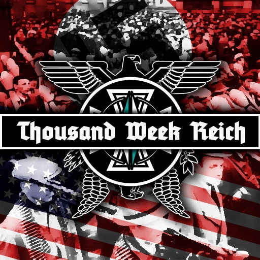

The year is 1952 - while the spectre of Nazi domination stands over a nightmarish Europe, the western powers led by the rising United States and the battered but not beaten United Kingdom rise to challenge the wavering German superpower. Since its victory at Dunkirk and the long and costly war against the Soviet Union, Germany’s cruel and nightmarish rule over Europe seems outwardly secure, but as Hitler grows old and ill, instability and rebellion threaten to shake this ‘New Order’ apart. At the same time, the ripples caused by the fall of Europe roll across the globe changing the course of history, with European colonial empires falling and a rising Chinese Republic eager to fill the vacuum left by a defeated Japan. Though the memory of war lies fresh in the memories of everyone, the status quo cannot hold for long…

Thousand Week Reich is an alternate history mod for the real-time strategy (RTS) game Hearts of Iron 4 that attempts to bring a sense of grounded, gritty realism to the age-old trope of an Axis 'victory' in the Second World War. Originally based on a series of maps by digital artist AP246/Proximexo, the TWR mod aims to explore a more grounded and ‘realistic’ version of the trope of a victorious Nazi Germany. Enter the world of TWR in 1952 and fight to hold onto the disintegrating remains of German ‘New Order’ or rise up to the task of defeating the oppressor and liberating Europe from Nazi tyranny.